Query Processing and Optimization¶
Learning Goals
- Understand how selection statements are executed
- Understand the basic join algorithms
- Understand the basics of heuristic (logical) query optimization
- Understand the basics of physical query optimization
Query Processing¶
Evaluation of an SQL Statement¶
The clauses are specified in the following order
SELECTcolumn(s)FROMtable listWHEREconditionGROUP BYgrouping column(s)HAVINGgroup conditionORDER BYsort list
But the query is evaluated in a different order
- Cartesian product of tables in the from clause
- Predicates in the where clause
- Grouped according to the group by clause
- Predicate in the having clause applied to (eliminate) groups
- Compute aggregation functions for each remaining group
- Projection on columns enumerated in the select clause
SQL is declarative!
Steps of Query Processing¶
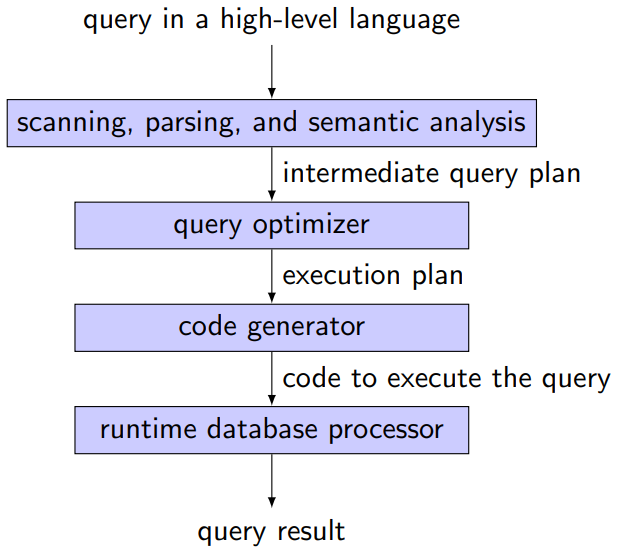
Parsing a Query¶
Parsing a query into an initial query plan
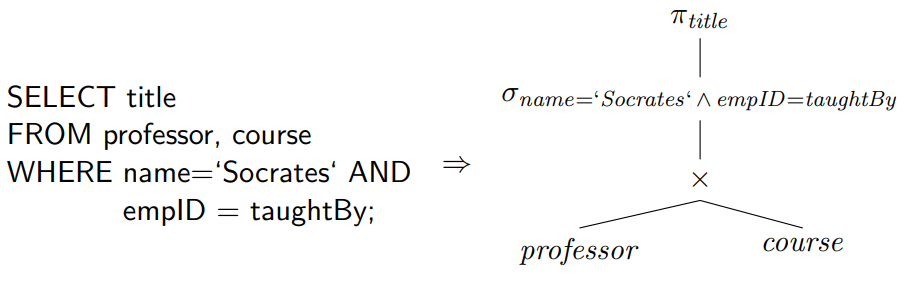
- \pi_{title}(\sigma_{name='Socrates' \and empID=taughtBy}(professor \times course))
Alternative Query Plan¶
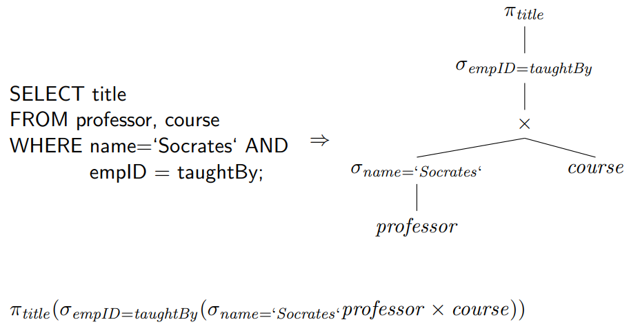
Query Optimization¶
Alternatives
- Equivalent query execution plans
- Algorithms to compute an algebra operation
- Methods to access relations (indexes)
Although the result is equivalent, execution costs might be different.
Theory meets reality
It is not the task of the user to write queries “efficiently”, it is the task of the query optimizer to execute them efficiently! But in reality. . . optimizers are not perfect.
Query Costs¶
Measures
- Total elapsed time for answering a query (response time)
- Many factors contribute to response time
- Disk access
- CPU costs
- Network communication
- Query load
- Parallel processing
- Disk access most dominant
- Block access time: seek time, rotation time
- Transfer time
Query Optimization¶
Logical query optimization
- Relational algebra
- Equivalence transformation
- Heuristic optimization
Physical query optimization
- Algorithms and implementations of operations
- Cost model
Heuristic (Logical) Query Optimization¶
Logical query optimization
- Foundation: algebraic equivalences
- Algebraic equivalences span the potential search space
- Given an initial algebraic expression:
- apply algebraic equivalences to derive new equivalent algebraic expressions
What is a good plan?
-
Difficult to compare plans without a cost function
\to logical query optimization relies on heuristics
Main goal of logical query optimization
Reduce the size of intermediate results
Equivalences¶
Break up conjunctions in selection predicates
\sigma is commutative
\pi cascades
If L_1 \subseteq L_2 \subseteq \cdots \subseteq L_n then
Change the order of \sigma and \pi
If the selection involves only attributes A_1, \dots, A_n contained in the projection list, the order of \sigma and \pi can be changed
\cup, \cap and \Join are commutative
Change the order of \sigma and \Join
If the selection predicate c involves only attributes of relation R, the order of \sigma and \Join can be changed
If the selection predicate c is a conjunction of the form c_1 \and c_2 and c_1 involves only attributes in R and c_2 involves only attributes in S, then we need to split c
Change the order of \pi and \Join
Given the projection list L=\{A_1,\dots,A_n, B_1,\dots,B_m\} where A_i represents attributes in R and B_i represents attributes in S
If the join predicate c only references attributes in L the following reformulation holds
\Join, \cap, \cup (in separate) are all associative
I.e., with \Phi representing either of these operations, the following holds
\sigma is distributive with \cap, \cup, -
I.e., with \Phi representing either of these operations, the following holds
\pi is distributive with \cup
Join and/or selection predicates can be reformulated based on De Morgan’s laws
Combination of Cartesian product and selection
A Cartesian product followed by a selection whose predicate involves predicates of both involved operands can be combined to a join
Remember the equivalent expressions for operators in relational algebra!
Phases of Logical Query Optimization¶
- Break up conjunctive selection predicates
- Push selections down
- Introduce joins by combining selections and cross products
- Determine join order Heuristic: execute joins with input from selections before executing other joins
- Introduce and push down projections Not always useful
Example in DBS8 slide 18 p. 35
Be Careful!¶
Find the titles of reserved films
1 2 3 | |
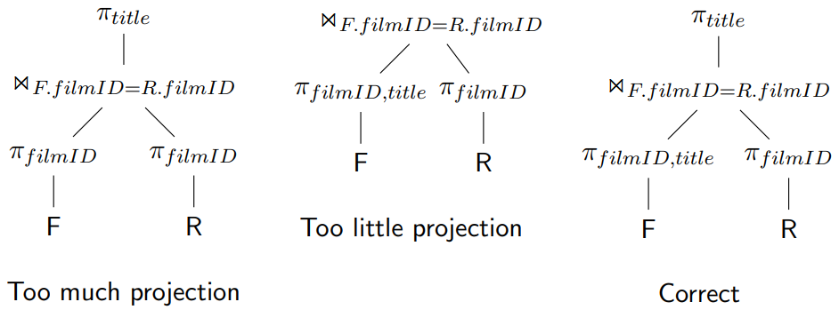
Find the titles of expensive reserved films
1 2 3 | |
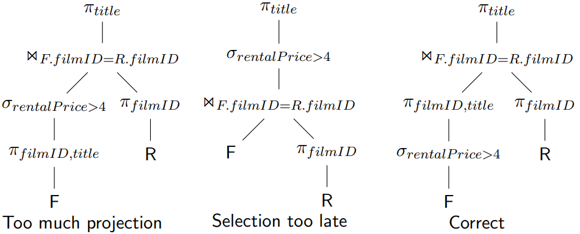
Summary: Heuristic Query Optimization¶
Rules of thumb
- Perform selections as early as possible
- Perform projections as early as possible
The optimization process
- Generate initial query plan from SQL statement
- Transform query plan into more efficient query plan via a series of modifications, each of which hopefully reducing execution time
Note
- A single query plan provides all the results
- Sometimes also called rule-based query optimization
Operator Implementations¶
Sample Database
Selection¶
Taxonomy¶
- Primary key, point
- \sigma_{filmID=2}(film)
- Here we could use an index
- Point
- \sigma_{title='Terminator'}(film)
- We may or may not have an index here
- Range
- \sigma_{1<rentalPrice<4}(film)
- Conjunction (logical and)
- \sigma_{kind='F' \and rentalPrice=4}(film)
- Disjunction (logical or)
- \sigma_{rentalPrice<4 \or kind='D'}(film)
Selection Strategies - Point/Range¶
Linear search
- Expensive but always applicable
Binary search
- Applicable only when the file is appropriately ordered
Primary hash index/table search
- Single record retrieval; does not work for range queries
- Retrieval of multiple records
Primary/clustering index search
- Multiple records for each index item
- Implemented with single pointer to block with first associated record
Secondary index search
- Implemented with multiple pointers, each to a single record
- Might become expensive
Strategies for Conjunctive Queries¶
1 2 3 4 | |
- Can indexes on (name) and (street) be used? Yes
- Can an index on (name, street, state) be used? Yes
- Can an index on (name, street) be used? Yes
- Can an index on (name, street, city) be used? Yes
- Can an index on (city, name, street) be used? No
Optimization of conjunctive queries
Indexing provides good opportunities for improving performance
Use available indexes
-
Ideal: composite index is applicable
-
If multiple are available
\to use the most selective index, then check remaining conditions
Use intersection of record pointers (if multiple indexes applicable)
- Index lookups to fetch sets of record pointers
- Intersect record pointers to perform conjunction
- Retrieve (and check) the qualifying records
Disjunctive queries provide little opportunity for improving performance.
Database tuning and the creation of indexes is important!
Join¶
Join strategies
- Nested loop join
- Index-based join
- Sort-merge join
- Hash join
Strategies work on a per block (not per record) basis
- Estimate I/Os (block retrievals)
- Use of main memory buffer
Table sizes and join selectivities influence join costs
- Query selectivity: sel = \mathrm{\# tuples\ in\ result \over \# candidates}
- For join, #candidates is the size of the Cartesian product
Nested Loop Join¶
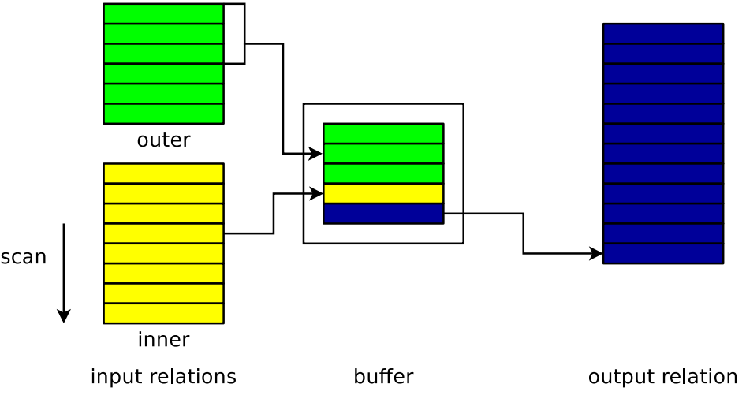
See example in DBS8 slide 36 p. 68
Block Nested Loop Join¶
Not all blocks fit into main memory
Parameters
- b_{inner}, b_{outer}: number of blocks
- n_B: size of main memory buffer
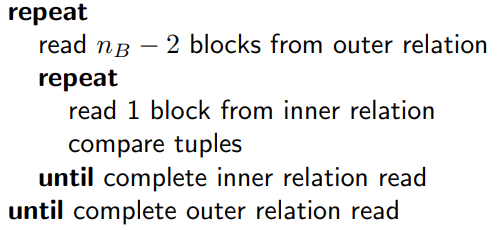
Cost estimation (block transfers):
If we know more system parameters (block transfer, disk seeks, CPU speed,. . . ) and the size of input relations, we can estimate the time to compute the join.
Example
reserved \Join customer
- number of blocks
- b_{reserved}=2.000, b_{customer}=10
- Size of main memory buffer
- n_B=6
Cost:
- reserved as outer
- 2.000+\lceil (2.000/4)\rceil \cdot 10 = 7.000
- customer as outer
- 10+\lceil (10/4)\rceil \cdot 2000 = 6.010
Index-based Block Nested Loop Join¶
Same principle as standard nested loop join
- Outer relation
- Inner relation
- Index lookups can replace file scans on the inner relation
Merge Join¶
Exploit sorted relations
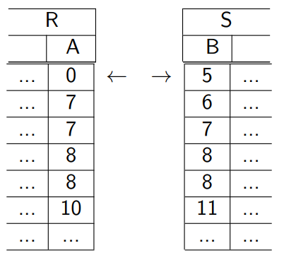
Assumption: Both input relations are sorted
Example in DBS8 slide 42 p. 126
Cost¶
Parameters
- b_1, b_2: number of blocks
Cost estimation (block transfer)
Extensions
- Combination with sorting if input relations are not sorted
- Not enough main memory
Hash Join¶
Apply hash functions to the join attributes
\to partition tuples into buckets
- Hash each relation on the join attributes
- Each bucket must be small enough to fit into memory
- Join corresponding buckets from each relation
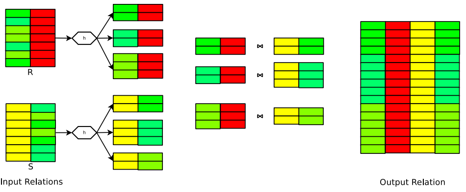
Example
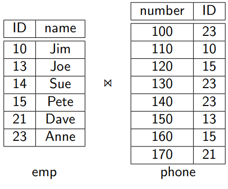
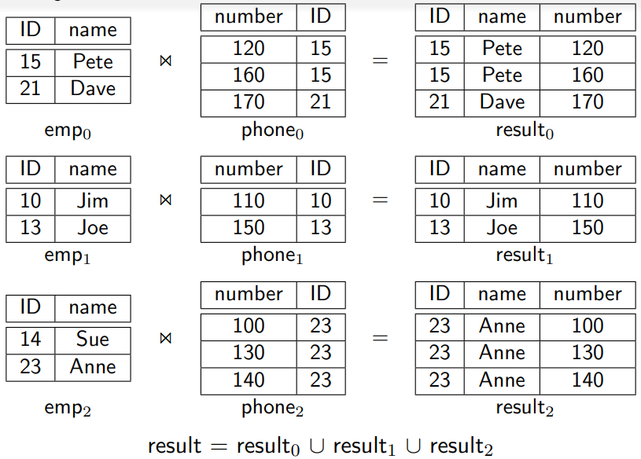
Algorithm¶
Parameters
- b_1, b_2: number of blocks for tables R_1 and R_2
Steps
-
Partitioning table R_1 with h_1 into buckets r_{1_i} (read all / write all)
2\times b_1
-
Partitioning table R_2 with h_1 into buckets r_{2_i} (read all / write all)
2\times b_2
-
Build phase:
use h_2 to create an in-memory hash index on bucket r_{1_i} (read all)
b_1
-
Probe phase
for corresponding r_{2_i}, use h_2 to test in-memory index for matches (read all)
b2
Cost estimation (block transfer)
\epsilon: partially filled blocks
Cost and Applicability of Join Strategies¶
Nested loop join
- Can be used for all join types
- Can be quite expensive
Merge join
-
Files need to be sorted on the join attributes
Sorting can be done for the purpose of the join
-
Can use indexes
Hash join
- Good hash functions are essential
- Performance best if smallest relation fits into main memory
Cost-based (Physical) Query Optimization¶
Objective
For a given query, find the most efficient query execution plan
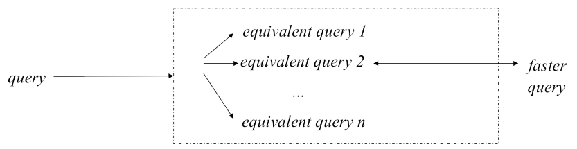
Physical query optimization¶
- Generate alternative query execution plans
- Choose algorithms and access paths
- Compute costs
- Choose cheapest query execution plan
Prerequisite
- Cost model
- Statistics on the input to each operation
- Statistics on leaf relations: stored in system catalog
- Statistics on intermediate relations must be estimated (cardinalities)
Selectivity and Cardinality¶
Statistics per Relation
For relation r
-
Number of tuples (records): n_r
-
Tuple size in relation r: l_r
-
Load factor (fill factor), percentage of space used in each block
-
Blocking factor (number of records per block)
-
Relation size in blocks: b_r
-
Relation organization
Heap, hash, indexes, clustered
-
Number of overflow blocks
Statistics per Attribute
For attribute A in relation r
-
Size and type
-
Number of distinct values for attribute A:V(A,r)
The same as the size of \pi_A(r)
-
Selection cardinality S(A,r)
The same as the size of \sigma_{A=a}(r) for an arbitrary value a
-
Probability distribution over the values
Alternative: assume uniform distribution
Statistics need to be updated when the table is updated!
Statistics per Index
- Base relation
- Indexed attribute(s)
- Organization, eg. B+-tree, hash
- Clustering index?
- On key attribute(s)?
- Sparse or dense?
- Number of levels (if appropriate)
- Number of leaf-level index blocks
Cost Estimation Example¶
See example in DBS8 slide 53 p. 160
Cost Model¶
Cost models consider more aspects than only disk access
- CPU time
- Communication time
- Main memory usage
- ...
For this purpose, we need to estimate input/output sizes of each operator
- Statistics on leaf relations: stored in system catalog
- Statistics on intermediate relations must be estimated (cardinalities)
Additional aspects
- Spanning search space (dynamic programming, exhaustive search, ... )
- Bushy vs. left-deep join trees (parallelism vs. pipelining)
- Multiquery optimization (shared scans, ... )
- ...
Heuristic vs Cost-Based Query Optimization¶
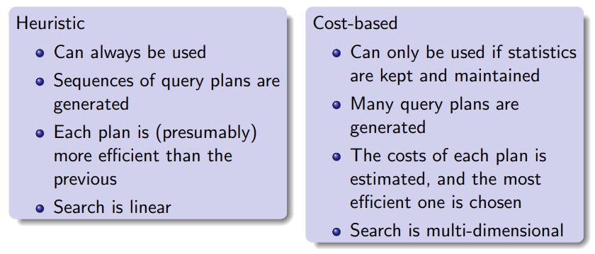
PostgreSQL¶
EXPLAIN
- Display the execution plan that the PostgreSQL planner generates for the supplied statement
1 2 3 4 5 6 7 | |
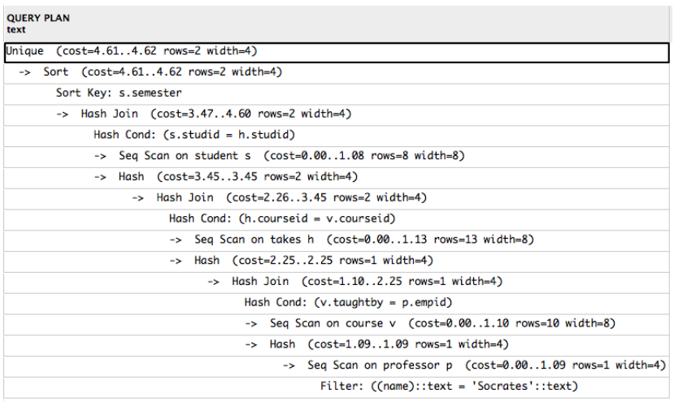
EXPLAIN ANALYZE
- The additional ANALYZE option causes the statement to be actually executed, not only planned
ANALYZE
- ANALYZE collects statistics about the contents of tables in the database
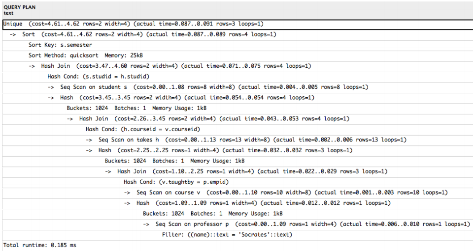
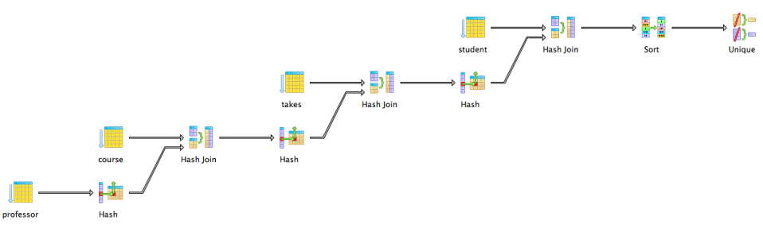
Sequential Scans vs Indexes¶
If an index is “useful” or not depends on
- How much data is relevant to the query
- Size of the relation
- Properties of the index (clustered, multiple columns, ... )
- What algorithm needs the data as input
- ...
Until query optimization is perfected, the main task of database administrators will remain query tuning (creating indexes, etc.).